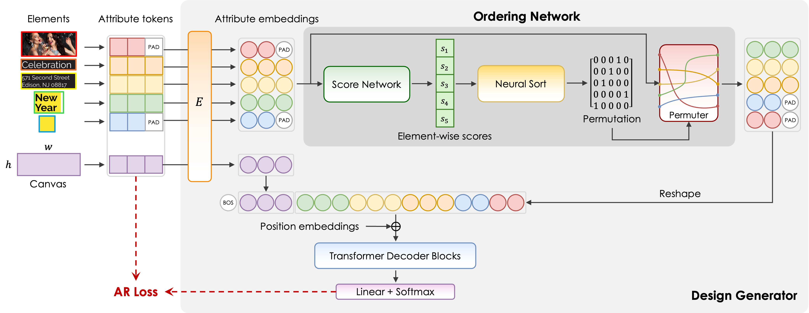

Bo YangI am a third-year Master student at ShanghaiTech University, advised by Prof.Ying Cao, expected to complete the degree this summer. I am actively seeking Ph.D (26 Fall) positions. I graduated from ShanghaiTech University with Bachelor's degree in 2022. |

|
ResearchMy research interests lie at the intersection of computer graphics, computer vision, and human-computer interaction, with a particular focus on generative models. I am passionate about enhancing the controllability and interpretability of AI systems in creative tasks, especially in developing tools that can better understand and assist human designers in their creative processes. Currently, my research focuses on graphic design and layout generation, and I am excited to extend this work to broader creative domains such as cinematic content creation and interactive design tools. |
|  |
Order Matters: Learning Element Ordering for Graphic Design GenerationBo Yang, Ying Cao ACM Trans. on Graphics (Proc. ACM SIGGRAPH 2025), Aug. 2025 project page / paper Develop a method to optimize the ordering of graphic elements to improve the performance of generative models of graphic designs. |
Experience |
Service & Teaching |
Honors |
|
Design and source code modified based on Jon Barron's website Last update: Feb, 2025 |